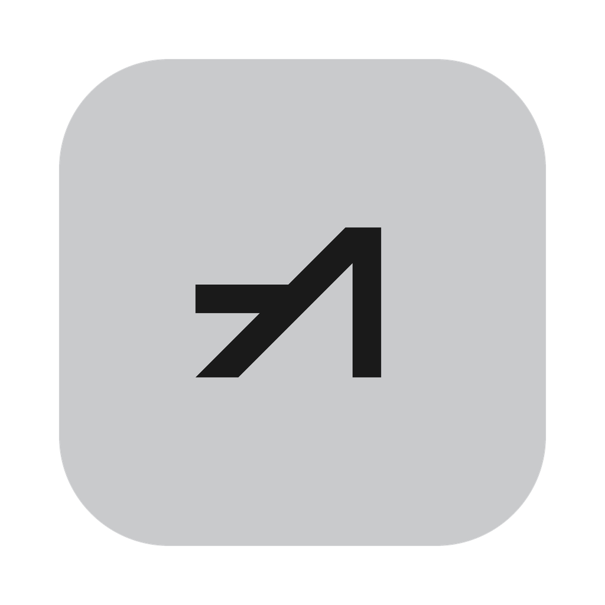
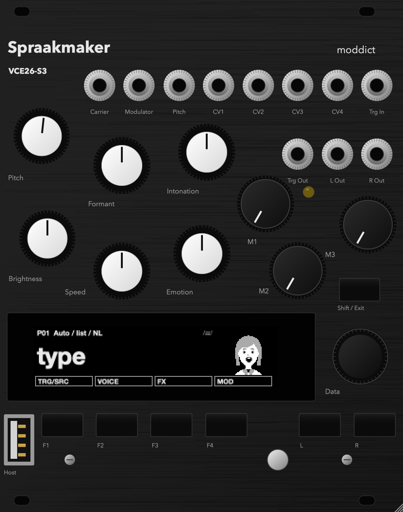
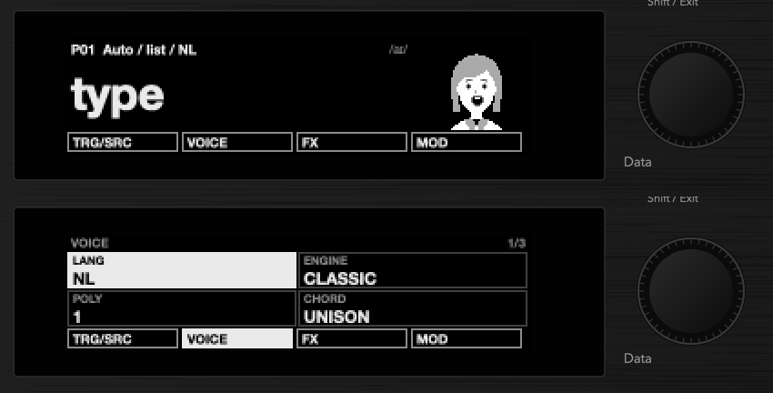
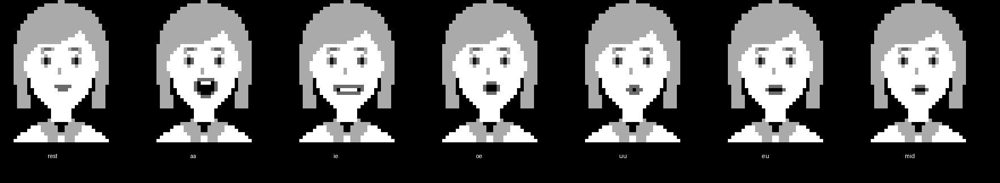
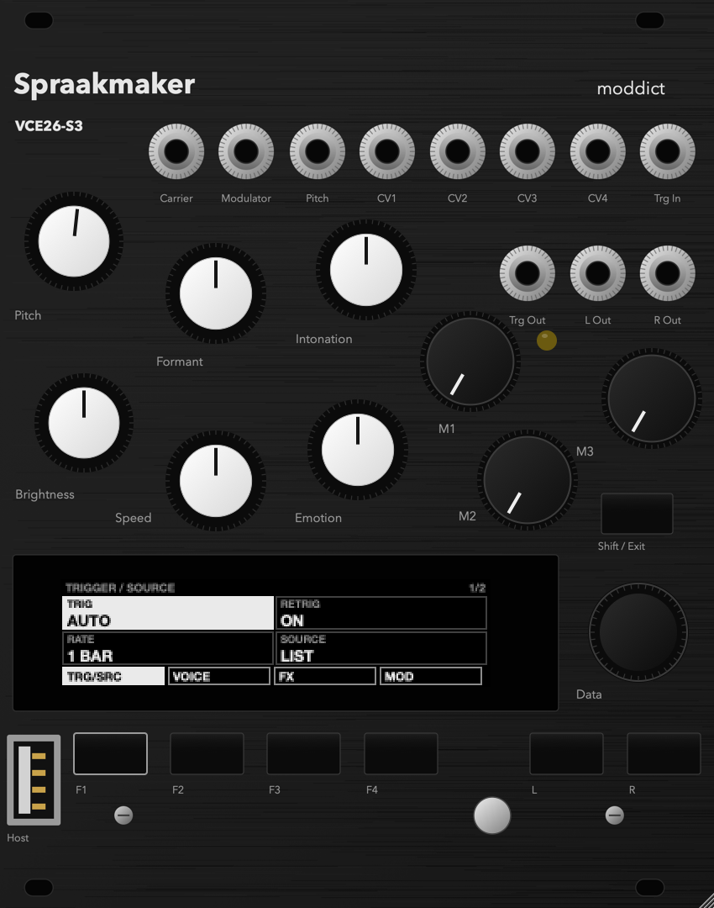
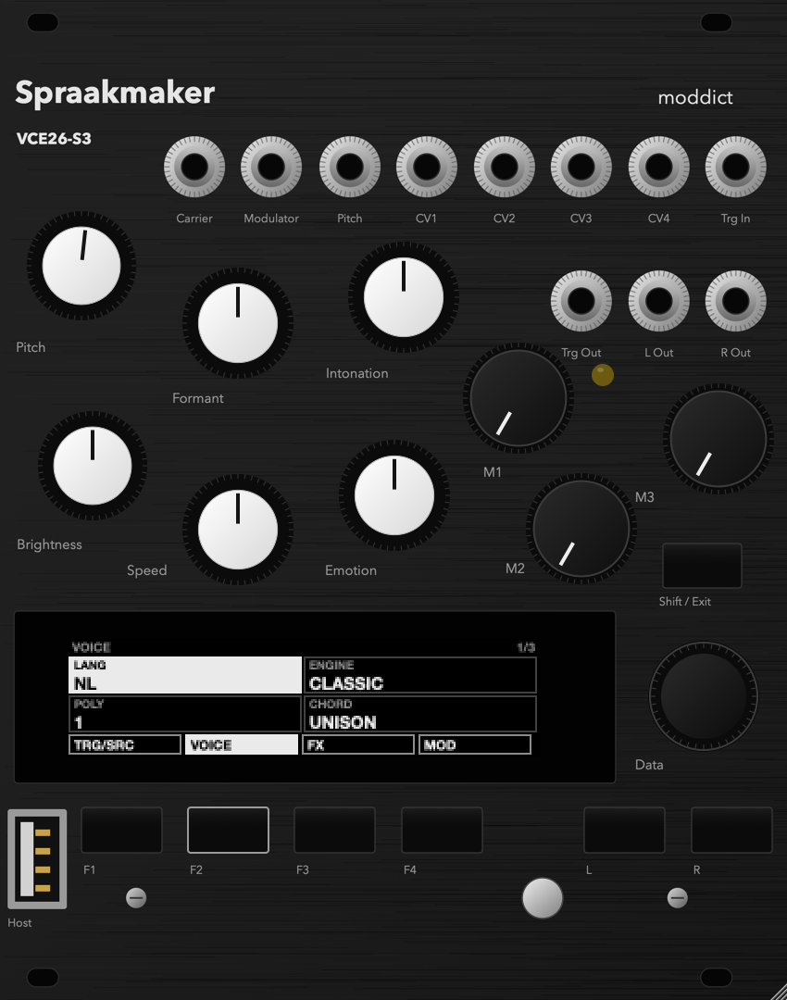
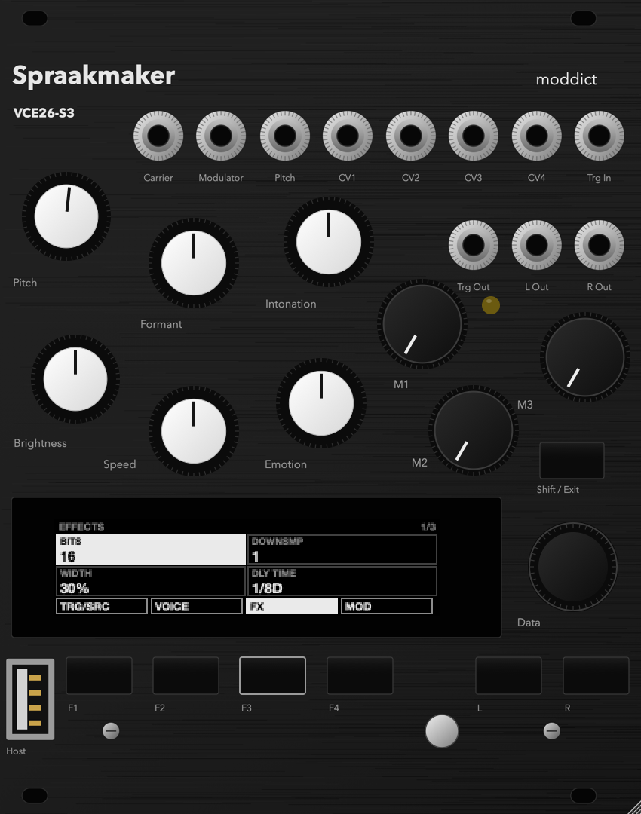
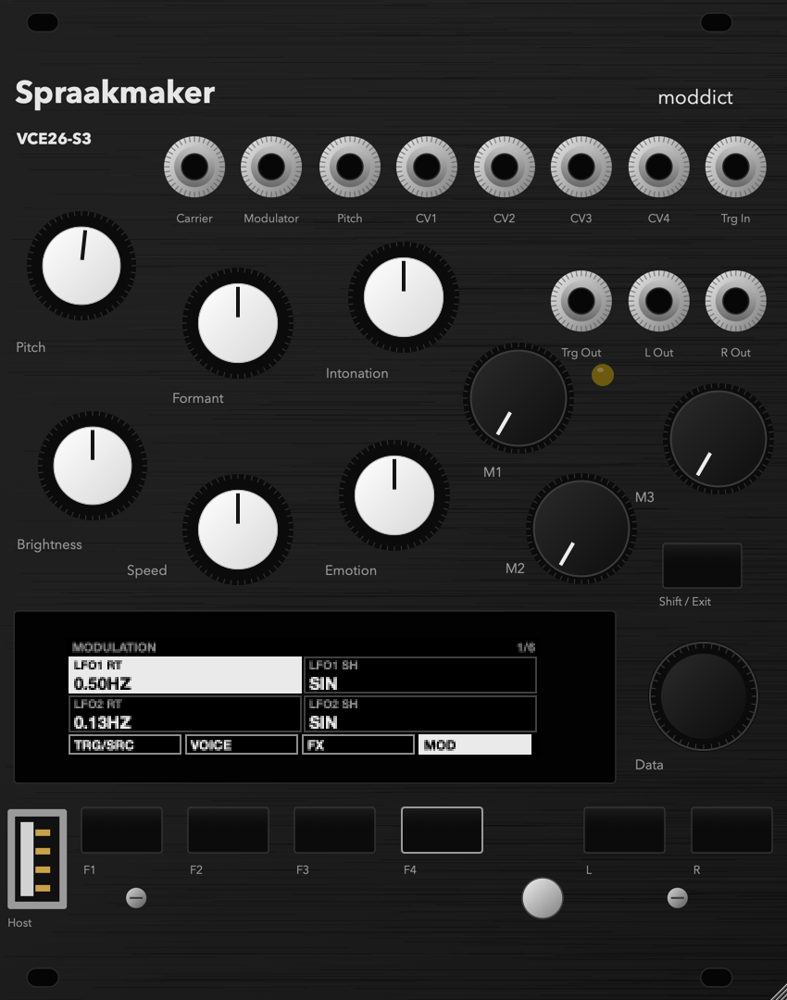

Spraakmaker is a plug-in version of the moddict Phonemer VCE26-S3, a Eurorack "speech computer", in a black panel edition. It turns text into speech with an 80s-style formant synthesizer, and it speaks both English and Dutch.
It is not a sample player: every word is synthesised from scratch, phoneme by phoneme, so you can bend pitch, mouth size, speed, intonation and emotion, play it as a chord, run it through a vocoder or chop it into single phonemes.
/Applications/Spraakmaker.app.The layout follows the hardware. Jacks can't take cables in a plug-in, so each one is mapped to something in your DAW; click a jack and the screen tells you what it does.
| Jack | In the plug-in |
|---|---|
| Carrier | Side-chain audio input 1: the vocoder's carrier. |
| Modulator | Side-chain audio input 2: the vocoder's modulator (e.g. your own voice or a drum loop). |
| Pitch | MIDI note number sets the speaking pitch. |
| CV1–CV4 | Four modulation slots. Each has a source, destination and amount on the MOD page; the CV1–CV4 parameters are also automatable from the DAW. |
| Trg In | MIDI note-on triggers speech (in TRIG, GATE, PH.TRG and PH.GATE modes). |
| Trg Out | MIDI out: note 60 at every word start, note 62 at every phoneme (set on TRG/SRC → TRG OUT). |
| L Out / R Out | The plug-in's stereo audio output. |
| Host (USB) | Your computer keyboard: in KEYB source, type words and press Enter to speak them. |
| Knob | Range | What it does |
|---|---|---|
| Pitch | ±24 st | Base speaking pitch. |
| Formant | 0–1 | Size of the "mouth": low = big, dark voice; high = small, child-like voice. Middle is neutral. |
| Intonation | 0–1 | How much the pitch melody moves: 0 = flat robot monotone, 1 = exaggerated. |
| Brightness | 0–1 | Spectral tilt of the voice source: muffled to buzzy. |
| Speed | 0–1 | Speaking rate. |
| Emotion | 0–1 | One macro over pitch range, jitter, breathiness and tempo variation: calm and whispery at 0, agitated at 1. |
| M1 · M2 · M3 | 0–1 | Macro knobs. Their destinations are set on the MOD page (defaults: M1 → Start point, M2 → Fine, M3 → Reverb). |
| Data | encoder | Turn to change the selected value (or browse presets on the home screen); push to load or trigger. |
The yellow LED flashes on every trigger.

The home screen shows the preset number, the trigger mode, source and language, the word being spoken in large type, the current phoneme, and Sanne, the pixel tutor from Tongval. Her mouth follows the sound being spoken, so you can see the lip shape of each Dutch vowel, and she blinks now and then.

Mouth shapes, left to right: rest (also m, b, p) · aa (maan, open wide) · ie (niet, spread) · oe (boek, round) · uu (muur, tight round, pushed forward) · eu (neus, round, mid; also ui and the weak e) · other sounds.
| Button | Action |
|---|---|
| F1 · F2 · F3 · F4 | Open the TRG/SRC, VOICE, FX and MOD pages. Press the same key again to return to the home screen. Pages with more values than fit scroll as you move the selection (the screen shows e.g. 1/3). |
| L · R | On a page: move the selection to the previous / next value. On the home screen: browse presets. |
| Data (turn) | Change the selected value. On the home screen: browse presets. |
| Data (push) | Home screen: load the browsed preset, or trigger speech. On LIST or SOURCE: open the list editor. On MICRO: load a .scl file. |
| Shift/Exit | On a page: back to the home screen. On the home screen: turns Shift on or off (it latches, so press it, then the next button). |
| Shift, then Data push | Save the current settings to the current preset slot. |
| Shift, then F1 | Edit the current word list. |
| Shift, then F2 | Load a Scala .scl tuning file. |
| Round button | Manual trigger. |
With the mouse you can also click any value on the screen to select it, then drag or scroll to change it.


When it speaks, and what it says.
| Value | Options | What it does |
|---|---|---|
| TRIG | AUTO · TRIG · GATE · PH.TRG · PH.GATE | Trigger mode, see below. |
| RETRIG | on/off | On: a new trigger cuts the current word. Off: the word finishes first. |
| RATE | FREE · 1/16 … 4 BAR | How often AUTO speaks. The note values sync to the host; FREE runs at its own pace. |
| SOURCE | DICT · ALPHA · KEYB · MARKOV · LETTR · LIST | What it says, see below. |
| LIST | 1–99 | Which word list LIST source plays. |
| ORDER | SEQ · RAND | Play list entries in order or at random. |
| START | 0–1 | Start point: where in the word playback begins. Push it up to start mid-word. |
| TRG OUT | WORD · PHON · BOTH · OFF | What sends MIDI out notes. |
| Mode | Behaviour |
|---|---|
| AUTO | Speaks the next item every RATE, on its own. |
| TRIG | Each MIDI note-on (or the round button) speaks the next item. |
| GATE | Speaks while the note is held and stops when you let go. |
| PH.TRG | Each trigger advances one phoneme: play a word sound by sound from the keyboard. |
| PH.GATE | Each note holds one phoneme for as long as the key is down: stretch vowels and fricatives. |
| Source | What it says |
|---|---|
| DICT | Random dictionary words. English: 126,000-word pronunciation dictionary. Dutch: the ~1,300 Tongval course words. |
| ALPHA | The alphabet: letter names, pronounced in the chosen language. |
| KEYB | What you type on the computer keyboard; Enter speaks it. |
| MARKOV | Generated phrases from a word chain: trained on Alice in Wonderland for English and Tongval's sentences and stories for Dutch. |
| LETTR | Lettrism: random phoneme strings, sound poetry with no meaning. |
| LIST | Entries from one of 99 editable word lists (section 11). |
| Value | Options | What it does |
|---|---|---|
| LANG | EN · NL | Language for pronunciation and for DICT, ALPHA and MARKOV. |
| ENGINE | CLASSIC · VOCODER · VOSINGER | Sound engine, see section 10. |
| POLY | 1–4 | Number of voices (VoSinger). |
| CHORD | 1–10 | Chord memory: UNISON, OCTAVE, FIFTH, MAJOR, MINOR, SUS4, MAJ7, MIN7, DIM, CLUSTER. |
| FINE | 0–50 cents | Detune between voices. |
| MICRO | EQUAL · JUST · PYTHAG · MEANTN · 24-TET · USER | Tuning table. USER uses a .scl file loaded with Shift then F2. |
| GLIDE | 0–1 | Portamento between notes. |
| ROOT | MIDI 24–84 | Base pitch when no MIDI note is held. |
| BANDS | 8–20 | Vocoder bands. |
| CARRIER | SAW · PULSE · NOISE | Internal carrier, used when nothing is on the Carrier input. |
| Value | Range | What it does |
|---|---|---|
| BITS | 4–16 | Bit depth: 16 is clean, lower is crunchier. |
| DOWNSMP | 1–16 | Sample-rate reduction factor. |
| WIDTH | 0–1 | Stereo width. |
| DLY TIME | 1/16 · 1/8 · 1/8D · 1/4 · 1/4D · 1/2 | Ping-pong delay time, synced to the host. |
| DLY FB · DLY MIX | 0–0.9 · 0–1 | Delay feedback and mix. |
| REV SIZE · REV MIX | 0–1 | Reverb size and mix. |
| LEVEL | 0–1 | Output level. |


Four LFOs, each with a rate (0.01–20 Hz) and a shape: SIN, TRI, SAW, SQR or S&H (random steps).
Each of CV1–CV4 connects one source to one destination, with an amount from −1 to +1.
| Sources | KNOB (the CV slot's own parameter, for DAW automation) · LFO1–4 · VEL (note velocity) · MODWH (mod wheel) · RAND (new random value per trigger) |
|---|---|
| Destinations | PITCH · FORMNT · INTON · BRIGHT · SPEED · EMOTN · START · FINE · CRUSH · DELAY · REVERB · WIDTH |
M1 DST, M2 DST, M3 DST choose what the black M knobs control, from the same destination list.
Speech is made in three steps, all inside the plug-in:
| Engine | Sound |
|---|---|
| CLASSIC | The formant voice on its own: 80s computer speech. |
| VOCODER | A 8–20-band vocoder. The Modulator input (or, if empty, the speech engine) shapes the Carrier input (or, if empty, the internal SAW/PULSE/NOISE carrier). |
| VOSINGER | The speech engine sung through the vocoder onto a carrier you play from MIDI: up to 4 voices, chord memories and FINE detune. Robot choir. |
99 lists live as plain text files, one entry per line, in ~/Library/Application Support/Spraakmaker/lists/ (list01.txt … list99.txt). Edit them in any text editor, or on the panel with Shift then F1 (or push Data while LIST is selected). An entry can be a word or a whole sentence.
| List | Starts with |
|---|---|
| 1 | Dutch greetings: Hallo! · Goedemorgen. · Hoe gaat het? · Dank je wel. · Tot straks. · Doei! |
| 2 | Dutch numbers één to tien. |
| 3 | Studio words: de synthesizer · het geluid · de kabel · de luidspreker · het ritme · de toon · de stem · de droom. |
| 4 | Dutch sentences: Ik ben een spraakmaker. · Waar is het station? · Het regent in Rotterdam. … |
| 5 | English: I am a speech computer. · Do angels fly through clouds during lunar thunderstorms? · Astral internet data ambiance. · The ground beneath my feet. |
| 6 | English numbers zero to nine. |
| 7–99 | Empty, for your own lists. |
100 slots; the first 20 are factory presets. Browse with the Data knob (or L/R) on the home screen and push Data to load; press Shift, then push Data to save over the current slot. Saved presets live in ~/Library/Application Support/Spraakmaker/presets/.
| Preset | What it is |
|---|---|
| HALLO NL | Dutch greetings (list 1), one per bar. |
| CLASSIC EN | Random English dictionary words, brighter voice. |
| MARKOV NL | Generated Dutch phrases every two bars, with reverb. |
| MARKOV ALICE | Generated phrases in the style of Alice in Wonderland. |
| ROBOTKOOR | VoSinger, 4 voices on a MIN7-type chord, Dutch sentences. |
| LETTRISME | Fast Dutch-sounding sound poetry with delay. |
| PH.GATE STOT | Studio words (list 3), one phoneme per held key: stutter. |
| ALFABET NL / ALPHABET EN | The alphabet, in Dutch or English. |
| FLUISTER | Whispery, dark Dutch voice in a big room. |
| KIND | Small, high, lively voice saying the greetings. |
| DIEPE STEM | Deep, slow Dutch voice. |
| GABBER SPRAAK | Fast, crushed, agitated sound poetry at 1/8 notes. Rotterdam. |
| VOCODER EXT | 20-band vocoder on your side-chain inputs, triggered by MIDI. |
| LUNAR STORM | Your Sadnoise lines (list 5) with delay, reverb and a drifting formant. |
| TYPMACHINE | Type Dutch on the computer keyboard, Enter speaks. |
| MICRO 24 | VoSinger cluster chord in 24-TET singing Markov Dutch. |
| TELWOORDEN | Counting één to tien on quarter notes. |
| SPREKENDE LFO | Random Dutch words with LFOs on pitch and emotion. |
| ENGLISH KEYS | Type English on the keyboard. |
| What | Where |
|---|---|
| Plug-ins | ~/Library/Audio/Plug-Ins/VST3/Spraakmaker.vst3, …/Components/Spraakmaker.component |
| App | /Applications/Spraakmaker.app |
| Lists and presets | ~/Library/Application Support/Spraakmaker/ |
| Source | ~/spraakmaker |